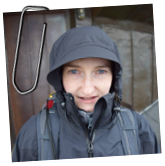

O mnie
Z wykształcenia jestem magistrem inżynierem planowania przestrzennego, specjalizuję się w Systemach
Inforamcji Geograficznej. Pasjonuję się technologiami informacyjnymi - szczególnie programowaniem
w języku Python.
Jestem oddaną matką i żoną. Nic nie sprawia mi większej przyjemności, niż obecność mojej rodziny.
Fascynują mnie góry wysokie oraz wspinaczka - skałkowa i bouldering. Uwielbiam wycieczki trekingowe,
a także pływanie. Nigdy nie odmawiam gry w planszówki.
